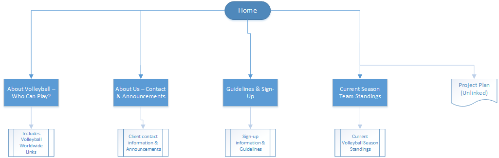

CP1406 - Assignment 1 - Project Plan
Name:
Mitchell Copeland for Slammers Beach Volleyball
Goal/Mission:
To deliver an objective-orientated small-business website to complement and increase the clients' existing customer-base through new customers. This will be done using supplied client content including images and content to appeal to the clients' target audience. The website should also display the clients' services and facilities available to both existing and future potential customers.
Success Evaluation:
The success of the clients' website will be determined by the increase of customers coming to the client. In this case the client is aiming for an achievable increase of 50% over their existing customer-base. This can be measured by the client by the amount of site-traffic/hits that then translate to the amount of bookings they receive after the site goes live.
Target Audience:
The client would like the site to appeal to a younger target audience, specifically to attract kids and young-adults between 15-30. This is in order to complement their existing customer-base of 35-50 year olds. This will be done by using a design-centric approach, using materials and supplied client-data to appeal to the projected age bracket.
Site Flowchart:
